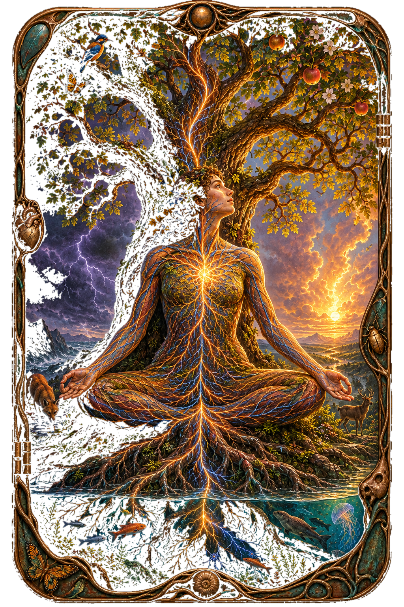

Philosophy’s recurring mistakes—and the ideas worth rescuing
Keep
Repair
Quarantine
54 / 54 Cards
Verdicts are editorial provocations, not truth scores.

SpinozaImmanence · 1677
Mind and body are not two substances but two attributes of one reality.
The map’s backbone: the cleanest early escape from the Cartesian trap, though his geometric certainty is more performance than proof.